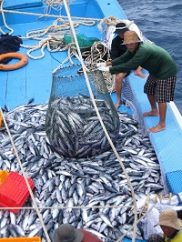

Chiếc đồng hồ hàng đầu mới nhất của Apple đã ra mắt. Đúng như dự đoán; nó khá giống với Series 5 ở nhiều điểm. Điều này không quá bất ngờ vì mỗi chiếc Apple Watch mới thường chỉ mang lại một; vài nâng cấp so với mẫu trước đó và Watch Series 6 cũng không có ngoại lệ.
Với đường bờ biển trải dài hơn 3.000 km và vùng lãnh hải dài hơn 12 hải lý, Việt Nam nằm ở vị trí trung tâm đa dạng sinh học của các vùng biển nhiệt đới, sở hữu nguồn cá dồi dào và các hệ sinh thái biển đa dạng như các rừng ngập mặn, rặng san hô và thảm cỏ biển. Vậy mà hiện nay, tình trạng suy thoái tài nguyên và ô nhiễm đại dương nghiêm trọng đã và đang diễn ra, mặc dù Việt Nam mới chỉ khai thác một phần tiềm năng kinh tế biển.
Được chính phủ và các đối tác tin tưởng trong việc giải quyết các vấn đề bảo tồn biển, WWF-Việt Nam đang tập trung vào hai lĩnh vực hoạt động nhằm bảo vệ hệ sinh thái biển và ven bờ, các loài nguy cấp và sức khỏe của con người thông qua:
Gia tăng số lượng nghề cá tham gia vào quá trình chuyển đổi hoặc cải tiến hoạt động để đạt được các mục tiêu đánh bắt bền vững, đặc biệt các nghề có hoạt động đánh bắt liên quan tới những hệ sinh thái biển quan trọng và có khả năng đánh bắt không chủ đích;
Ngăn chặn ô nhiễm đại dương, đặc biệt là ô nhiễm biển do rác thải nhựa.

Apple không phải là công ty đầu tiên; tích hợp cảm biến theo dõi SpO2 vào các tính năng sức khỏe trên Apple Watch; nhưng bạn hoàn toàn có thể tin tưởng về những gì mà công ty triển khai. Theo các chuyên trang công nghệ đánh giá; kết quả đo mức oxy trong máu của Series 6 là khá chính xác so với các máy đo chuyên dụng khác.Apple Watch Series 6 có thời lượng pin 18 giờ tương tự như Apple Watch Series 5, Series 4 và Series 3 trước đó. Tuy vậy, mẫu Apple Watch này đã hỗ trợ công nghệ sạc nhanh, cho phép người dùng chỉ cần 90 phút để sạc đầy pin. Trong khi đó, Series 5 cần khoảng 2 giờ để sạc đầy pin.Apple Watch Series 6 có giá khởi điểm 399 USD cho phiên bản 40mm với GPS + chỉ Wi-Fi và 499 USD để có thêm kết nối LTE. Trong khi đó, phiên bản 44mm lớn hơn sẽ được bán với giá khởi điểm là 429 USD. Đợt giao hàng đầu tiên mẫu Apple Watch này sẽ bắt đầu từ ngày 18 tháng 9.